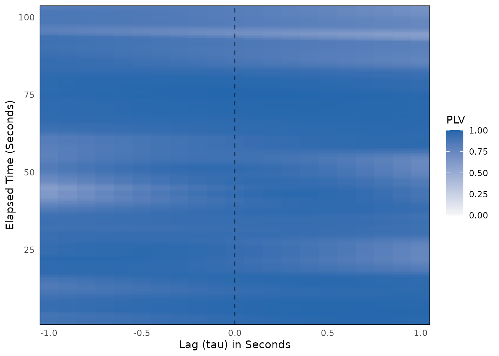
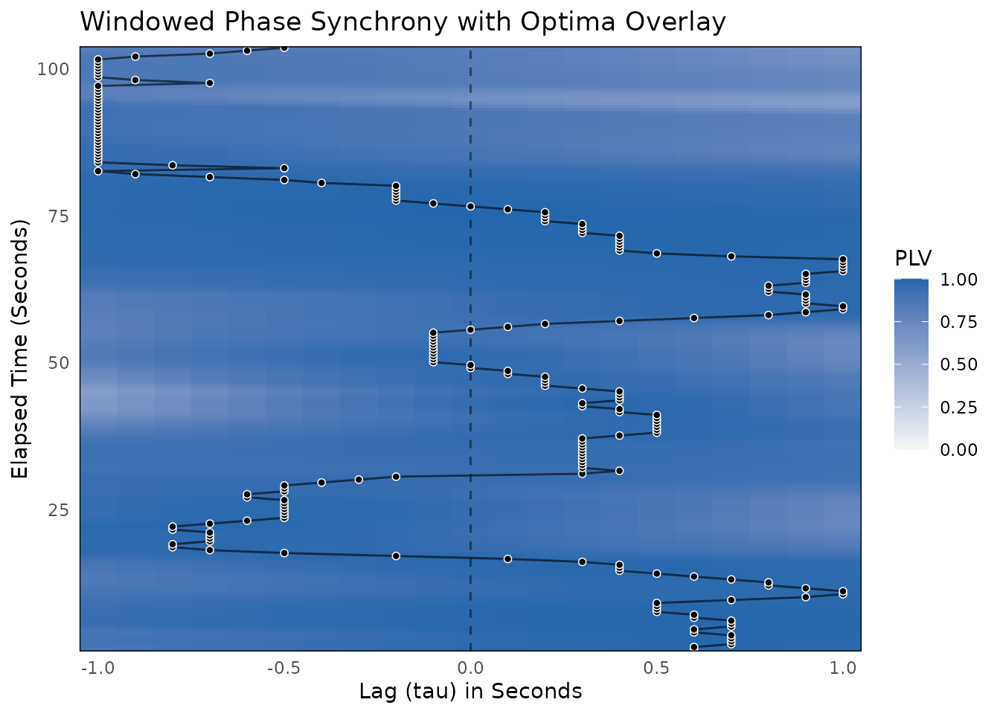

This vignette walks through a complete windowed phase synchrony analysis using the bsync package.
Windowed Cross-Correlation (WCC) asks whether two signals rise and fall together. Phase synchrony asks a narrower question: do two rhythmic signals keep a stable timing relationship within each cycle, whatever their amplitudes? Two people swaying, rocking, or nodding at a shared tempo can be strongly phase-locked even when one moves with much larger amplitude than the other.
1. What is Windowed Phase Synchrony?
wphase() extracts the instantaneous phase of each series
once, with the analytic signal (the Hilbert transform). For each window
and lag, it then summarizes the phase differences between the two series
in two numbers:
- PLV (phase-locking value): the length of the mean unit vector of the phase differences, from 0 to 1. A PLV of 1 means the phase difference stays constant across the window. A PLV near 0 means the phase difference is spread evenly around the circle. This is the phase-locking value of Lachaux et al. (1999), averaged over the time samples of a window instead of over trials.
-
Relative phase (
rel_phase): the circular mean of the phase differences, in radians. Positive values mean thatxis ahead ofyin its cycle.
1.1 The Narrowband Assumption
Instantaneous phase is only well defined for a narrowband signal, which is a signal dominated by one rhythm. Behavioral data rarely look like that. They usually carry slow drift (posture changes, sensor drift) and fast measurement noise on top of the rhythm of interest.
This matters because the error is in the dangerous direction. Slow,
broadband drift makes the phases of two series change slowly, so their
difference stays nearly constant across a short window, and the PLV
rises. High PLV on unfiltered data is therefore not evidence of
synchrony. Lachaux et al. (1999) band-pass filter their signals before
extracting the phase, and you should do the same. wphase()
does not filter for you, because a filter changes the data and the
choice of band belongs to you.
When is windowed phase synchrony useful?
- Rhythmic behavior: rocking, swaying, walking, tapping, nodding, breathing, or any behavior with a clear tempo.
- Timing over amplitude: when the timing relationship within each cycle matters more than how large the movements are.
When should you avoid it?
- Non-rhythmic behavior: if no single rhythm dominates the signal, phase has no clear meaning, even after filtering.
-
Missing data: the Hilbert transform uses the whole
series, so a single
NAcorrupts every phase estimate.wphase()stops onNAinput. Impute withimpute_ts_gaps()or trim withtrim_edges()first.
2. Simulating Realistic Dyadic Data
We simulate two people captured at 10 Hz for 2 minutes. Both move with a shared rhythm near 0.5 Hz (one cycle every 2 seconds). The tempo wanders slowly over time, as human tempo does, and Person B follows Person A’s rhythm. Person A leads by 0.5 seconds at the start, and the lead shifts smoothly until Person B leads by 0.5 seconds at the end.
On top of the rhythm, each person has independent slow drift and measurement noise.
library(bsync)
set.seed(2026)
fs <- 10 # sampling rate in Hz
n <- 1200 # 2 minutes of data
t <- (0:(n - 1)) / fs
# A shared tempo near 0.5 Hz that wanders slowly over time
wander <- stats::filter(rnorm(n + 200, sd = 0.6), rep(1 / 50, 50), circular = TRUE)
freq <- 0.5 + as.numeric(wander)[101:(100 + n)]
phase_A <- 2 * pi * cumsum(freq) / fs
# Person B follows Person A: A leads by 0.5 s at the start, B by 0.5 s at the end
lead_sec <- seq(0.5, -0.5, length.out = n)
phase_B <- approx(t, phase_A, xout = t - lead_sec, rule = 2)$y
# Independent slow drift (a strongly autocorrelated AR(1) process) for each person
drift <- function() as.numeric(stats::arima.sim(list(ar = 0.98), n))
person_A <- cos(phase_A) + 0.25 * drift() + rnorm(n, sd = 0.3)
person_B <- cos(phase_B) + 0.25 * drift() + rnorm(n, sd = 0.3)3. Band-Pass Filtering Before Phase Extraction
A band-pass filter keeps one frequency band and removes the rest.
Here we keep 0.3 to 0.7 Hz, a band around the shared rhythm. In your own
data, choose the band from theory about the behavior or from the power
spectrum (see vignette("determine-downsampling") for
evaluate_signal_power()).
We use a Butterworth band-pass filter from the
gsignal package (butter() with
n = 2, which gives a 4th-order band-pass) and apply it with
filtfilt(), which runs the filter forward and then
backward. This zero-phase filtering does not shift the timing of the
signal, which matters when timing is the thing you measure.
bp_filter <- gsignal::butter(2, c(0.3, 0.7) / (fs / 2), type = "pass")
band_pass <- function(v) as.numeric(gsignal::filtfilt(bp_filter, v))
person_A_f <- band_pass(person_A)
person_B_f <- band_pass(person_B)To see why this step matters, compare two independent drift series, which share nothing, before and after filtering:
indep_1 <- drift()
indep_2 <- drift()
plv_indep_raw <- wphase(indep_1, indep_2, window_size = 150, lag_max = 10)$aggregate[[1]]
plv_indep_filt <- wphase(
band_pass(indep_1), band_pass(indep_2),
window_size = 150, lag_max = 10
)$aggregate[[1]]
plv_dyad_raw <- wphase(person_A, person_B, window_size = 150, lag_max = 10)$aggregate[[1]]
round(c(
independent_unfiltered = plv_indep_raw,
independent_filtered = plv_indep_filt,
dyad_unfiltered = plv_dyad_raw
), 3)
#> independent_unfiltered independent_filtered dyad_unfiltered
#> 0.487 0.332 0.390The two independent series reach a mean PLV of 0.487 without filtering, and the coupled dyad reaches only 0.39. Two series that share nothing score higher than a coupled pair, so a PLV on unfiltered data does not measure coupling. After filtering, the independent pair drops to 0.332. That value is still well above 0, because two narrowband signals keep similar phases over a short window by chance. This is why a surrogate test (Section 5) is needed to judge any PLV.
4. Calculating Windowed Phase Synchrony on the Filtered Pair
Phase synchrony needs windows long enough to hold several cycles. We
use 15-second windows (window_size = 150, 7.5 cycles of the
0.5 Hz rhythm) and lags up to 1 second (lag_max = 10),
which is half a cycle. A window moves 0.5 seconds at a time
(window_increment = 5).
wphase_results <- wphase(
x = person_A_f,
y = person_B_f,
window_size = 150,
lag_max = 10,
window_increment = 5
)
print(wphase_results)
#>
#> ── Windowed Phase Synchrony Analysis ───────────────────────────────────────────
#> Total Windows: 206
#> Total Lags Tested: 21
#> Window Size: 150
#> Max Lag: 10
#> Mean PLV: 0.9104The wphase() function returns a list object of class
wphase_res. Its results_df has one row per
window (i, in samples) and lag (tau, in
samples), with the plv and rel_phase of that
cell.
The relative phase carries the lead–lag information. At lag 0, divide
the relative phase (in radians) by 2 * pi * 0.5 (the rhythm
frequency in radians per second) to get the lead of Person A in
seconds:
lag0 <- wphase_results$results_df[wphase_results$results_df$tau == 0, ]
lag0$time_sec <- (lag0$i - 1) / fs
lag0$lead_A_sec <- lag0$rel_phase / (2 * pi * 0.5)
rows <- round(seq(1, nrow(lag0), length.out = 5))
round(lag0[rows, c("time_sec", "rel_phase", "lead_A_sec")], 2)
#> time_sec rel_phase lead_A_sec
#> 2061 1.0 1.45 0.46
#> 2112 26.5 0.62 0.20
#> 2164 52.5 -0.05 -0.02
#> 2215 78.0 -0.43 -0.14
#> 2266 103.5 -1.33 -0.42The estimated lead of Person A moves from 0.46 seconds in the first window to -0.42 seconds in the last. The simulated lead moved from 0.5 to -0.5 seconds.
5. Surrogate Testing for Significance
Section 3 showed that unrelated narrowband signals still give a sizable PLV. A surrogate test asks whether the observed PLV is larger than the PLV of pairs whose timing relationship was destroyed.
Circular-shift surrogates
(generate_surrogate_circular()) suit phase synchrony well.
Each surrogate shifts the whole series of Person B by a random amount
and wraps the end around to the start. The rhythm of Person B stays
intact, but its alignment with Person A is broken. A shift smaller than
the largest lag tested would leave the alignment within reach of a
lagged window, so pass lag_max to keep every shift at least
twice that far away.
One caution: a circular shift of a perfectly periodic signal only adds a constant to its phase, and PLV ignores constant phase offsets. Against a strictly periodic shared rhythm, this null has no power. Real behavior has a wandering tempo, as simulated here, which gives the test its power.
y_surr <- generate_surrogate_circular(person_B_f, n_surrogates = 1000, lag_max = 10)
surr_mean <- wphase_surrogate(
x = person_A_f,
y = person_B_f,
y_surrogates = y_surr,
window_size = 150,
lag_max = 10,
window_increment = 5
)
print(surr_mean)
#>
#> ── Windowed Phase Synchrony Surrogate Analysis (Pseudo-Synchrony) ──────────────
#> Permutations: 1000
#> Observed Mean PLV: 0.9104
#> Average Null Mean PLV: 0.4323
#> Empirical p-value: 0.001
#> ✔ Observed phase synchrony is significantly greater than chance.The empirical p-value is (b + 1) / (n + 1), where n is the number of surrogates and b counts the surrogates whose mean PLV is at least as large as the observed one. Here the observed mean PLV is 0.91, the average surrogate gives 0.432, and p = 0.001.
6. The Peak Statistic
By default, wphase() summarizes the surface with the
mean PLV over all windows and lags
(statistic = "mean_plv"). The alternative,
statistic = "peak", takes the largest PLV across lags in
each window and averages those per-window values. This is the best-lag
convention that wcc() also offers as
statistic = "peak". It suits a dyad whose lead–lag shifts
over time, because each window counts at the lag where the phases lock
best.
Pass the statistic that you report from
wphase() to wphase_surrogate() as well, so
that the test is of that statistic. wphase_surrogate()
summarizes the observed data and every surrogate with it. The same
surrogate matrix can be reused:
surr_peak <- wphase_surrogate(
x = person_A_f,
y = person_B_f,
y_surrogates = y_surr,
window_size = 150,
lag_max = 10,
window_increment = 5,
statistic = "peak"
)
print(surr_peak)
#>
#> ── Windowed Phase Synchrony Surrogate Analysis (Pseudo-Synchrony) ──────────────
#> Permutations: 1000
#> Observed Mean Peak PLV: 0.9511
#> Average Null Mean Peak PLV: 0.4959
#> Empirical p-value: 0.001
#> ✔ Observed phase synchrony is significantly greater than chance.With the peak statistic, the observed value is 0.951 against a surrogate average of 0.496, and p = 0.001. The peak statistic is at least as large as the mean statistic for the observed data and for 1000 of the 1000 surrogates, so compare each observed value only with the null of its own statistic. Choose the statistic before you look at the results.
7. Optima Extraction
pick_optima() finds the lag with the highest PLV in each
window. With search_method = "global", it returns one
optimum per window.
wphase_optima <- pick_optima(wphase_results, search_method = "global")
summary(wphase_optima)
#>
#> ── Windowed Phase Synchrony Optima ─────────────────────────────────────────────
#> Total Windows: 206
#> Valid Optima: 206
#> Search Method: global
#>
#> ── Optimum Lag Distribution ──
#>
#> 0% 25% 50% 75% 100%
#> -10.00 -6.75 2.00 5.00 10.00For narrowband signals, PLV changes only slowly across lags, because a lag shift adds a nearly constant phase offset within a window. The best lag is then identified only through the tempo wander that the two people share, and it is a noisy estimate of the lead. Because we simulated the data, we can compare both estimates with the true lead at the center of each window:
center <- wphase_optima$i + 75 # sample at the center of each 150-sample window
true_lead_samples <- lead_sec[center] * fs
cor_optima <- cor(wphase_optima$optimum_lag, true_lead_samples)
cor_rel_phase <- cor(lag0$lead_A_sec, lead_sec[lag0$i + 75])
round(c(optimum_lag = cor_optima, rel_phase_lead = cor_rel_phase), 2)
#> optimum_lag rel_phase_lead
#> 0.50 0.98The PLV optima correlate 0.5 with the true lead, and the lead read
from the relative phase at lag 0 correlates 0.98. Of the 206 optima, 44
sit at the edge of the lag range (-10 or 10 samples), where the search
has no room on one side. In this example, the relative phase is the
better reading of the lead–lag. leadership_asymmetry()
accepts wphase optima, but check them against the relative
phase before you use them for a leadership index.
8. Visualizing the Results
plot() draws the PLV surface as a heatmap of windows by
lags. The time_step argument converts the axes from samples
to seconds.
plot(wphase_results, time_step = 1 / fs)
plot_optima_overlay() adds the per-window optima to the
same surface:
plot_optima_overlay(
surface_obj = wphase_results,
optima_df = wphase_optima,
time_step = 1 / fs,
show_zero_lag = TRUE
)
The PLV changes little across lags within a window. Across windows, the median of the lowest PLV in a window is 0.83, and the median of the highest is 0.97. This is the flat lag profile described in Section 7.
See also
-
vignette("surrogate-testing")for circular-shift, phase-randomization, IAAFT, segment, and pseudo-dyad surrogates, and which null each one tests -
vignette("choosing-parameters")for tools to choose and checkwindow_sizeandlag_max -
vignette("determine-downsampling")for reading the power spectrum withevaluate_signal_power() -
vignette("wcc-workflow")for the Windowed Cross-Correlation workflow, which shares the optima and leadership pipeline - Lachaux, J.-P., Rodriguez, E., Martinerie, J., & Varela, F. J. (1999). Measuring phase synchrony in brain signals. Human Brain Mapping, 8(4), 194–208.